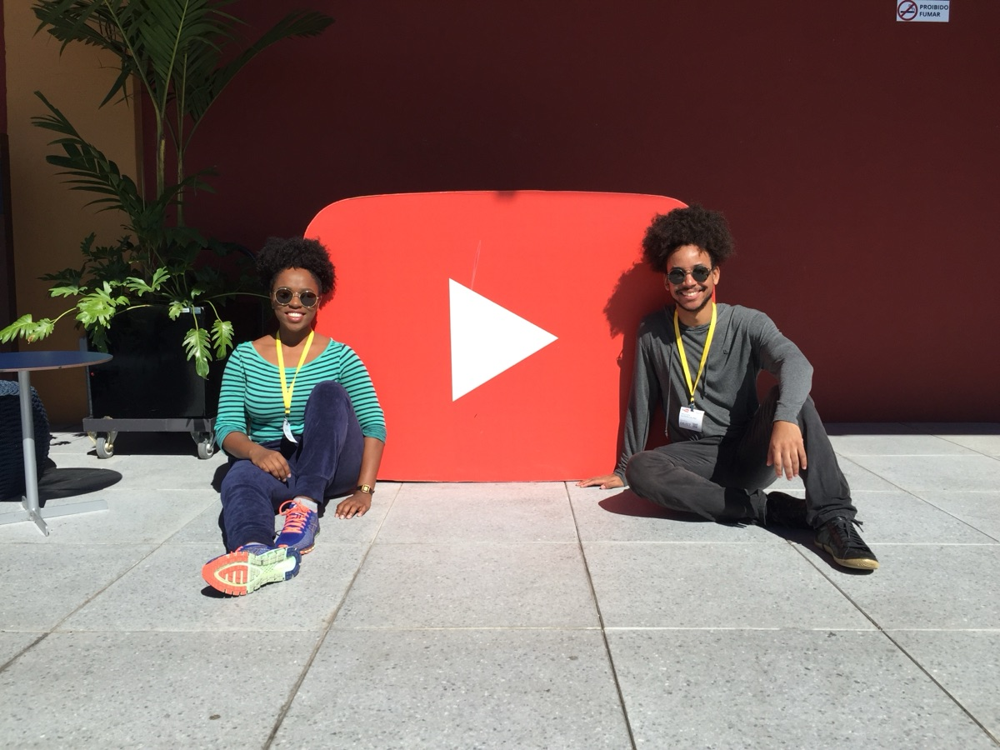
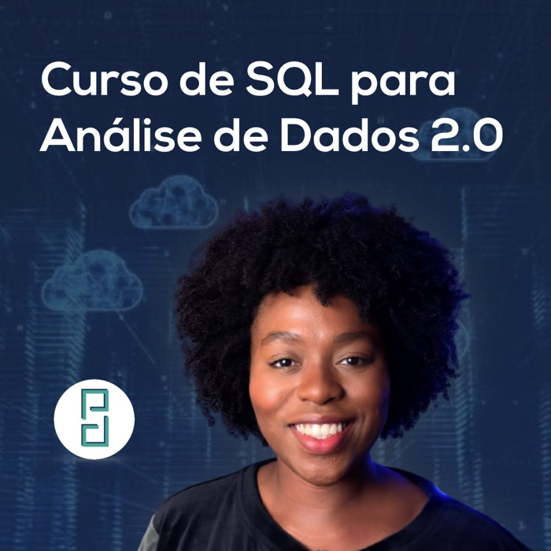
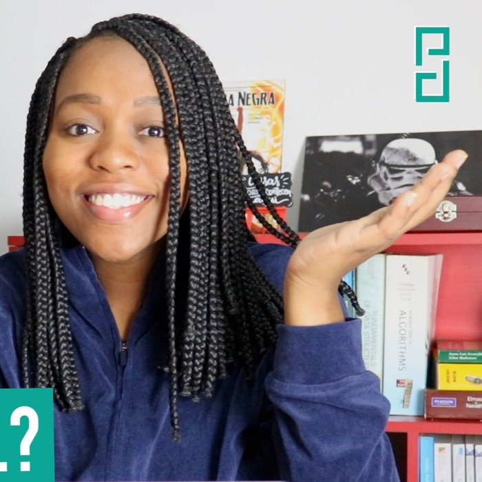
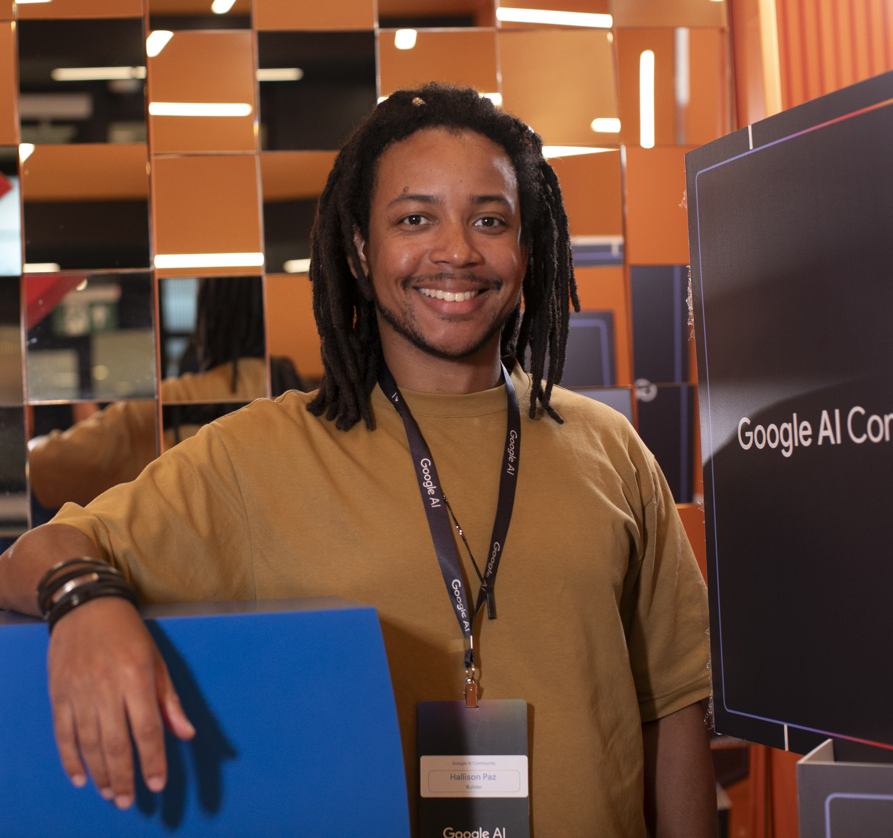

Mais popular
Python do Jeito Certo
Fundamentos sólidos de programação em Python, do zero à lógica que você usa no dia a dia.
R$ 249
Ver curso
Criamos conteúdos gratuitos, didáticos e acessíveis para que uma parcela maior e mais plural da população brasileira viva uma mudança de perspectiva e alcance novas oportunidades.
Faça parte da nossa comunidade

Compartilhamos o que aprendemos em instituições de exclência do Brasil e do exterior simplificando conceitos sem abrir mão da profundidade necessária para discutir ideias complexas.
Exemplos reais e didática que pavimenta o caminho do iniciante ao avançado.
Um homem negro e uma mulher negra ocupando e abrindo espaços de excelência em tecnologia.
Formamos pessoas capazes de decidir com dados e construir suas próprias oportunidades.
De profissionais experientes a entusiastas que estão começando: histórias de motivação, tutoriais e discussões sobre as tecnologias que estão moldando o futuro do trabalho.
Keynotes, painéis, podcasts e colaborações: somos convidados para falar sobre tecnologia, dados, IA, carreira e diversidade — no Brasil e no exterior.
Quer o Programação Dinâmica no seu evento ou podcast? Fale com a gente.
Do fundamento matemático à análise de dados no mercado — no seu ritmo, com projetos reais.
Fundamentos sólidos de programação em Python, do zero à lógica que você usa no dia a dia.

Consulte, cruze e transforme dados com SQL — a linguagem essencial de quem trabalha com dados.
A base matemática que sustenta a programação e a ciência de dados, sem medo.

Colete, limpe e visualize dados para tirar conclusões reais — uma série completa e gratuita.
Levamos didática, técnica e alcance para marcas, instituições e times que querem comunicar tecnologia com clareza.
Vídeos, cursos e materiais didáticos sobre programação, ciência de dados e inteligência artificial, feitos sob medida.
Orientação para seus estudos ou para projetos de ciência de dados e inteligência artificial, do planejamento à execução.
Impulsione sua marca empregadora ou produto com conteúdos exclusivos nas nossas mídias — YouTube, Instagram, LinkedIn e Twitter.
Contrate Kizzy Terra e Hallison Paz para palestrar, cobrir ou apresentar o seu evento com autoridade e carisma.
Gostou? Solicite um orçamento por e-mail.
Solicitar orçamento — pgdinamica@brunch.agContrate uma de nossas palestras ou co-crie com a gente uma versão personalizada para o seu evento.
Instituições com as quais já trabalhamos
Mais de 35 organizações — de startups a empresas multinacionais, no Brasil e no exterior.
Educação e pensamento crítico são essenciais na era da inteligência artificial — Fórum RNP 2026
Soberania digital e impactos da IA na sociedade em debate no Fórum RNP 2026
Referência em ciência de dados no país, Kizzy Terra é finalista do Prêmio YouTube Educação Digital
Kizzy Terra: inteligência artificial e o futuro do trabalho
YouTube Brasil estreia a 3ª temporada do videocast Substantivo Feminino
Cerca de 5 mil pequenos negócios fazem imersão sobre inteligência artificial com o Sebrae
“Contas públicas, perfis abertos” leva influenciadores para debater transparência
No Clima Certo: criadores debatem a desinformação climática
Relatório de Impacto do YouTube: 20 anos de criatividade e economia criativa no Brasil
Dois engenheiros de computação do IME que decidiram democratizar o conhecimento que conquistaram.
Engenheira de Computação pelo Instituto Militar de Engenharia (IME), mestre em Matemática Aplicada pela FGV-RJ, Doutoranda na PUCSP. Já atuou como analista de dados de utilidade pública na FGV-RJ e no IPEA, e como cientista de dados sênior na Cyberlabs.

Engenheiro de Computação pelo IME, mestre e doutor em Matemática pelo Instituto de Matemática Pura e Aplicada (IMPA). É membro do laboratório de Visão e Computação Gráfica do IMPA (VISGRAF) e trabalhou como engenheiro de inteligência artificial na Cyberlabs.
Gosta de ler? Acompanhe as últimas atualizações do nosso blog no Medium — artigos aprofundados sobre tecnologia, carreira e dados.